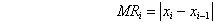
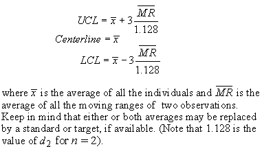
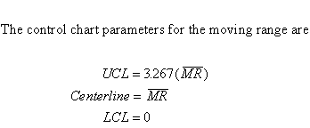
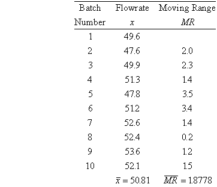
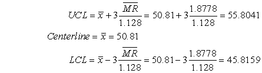
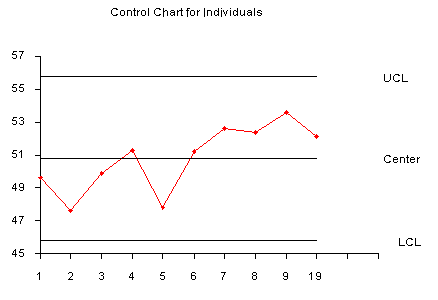
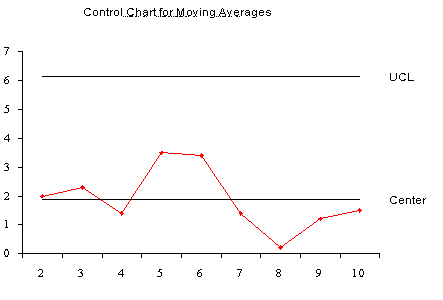
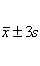

|
6.
Process or Product Monitoring and Control
6.3. Univariate and Multivariate Control Charts 6.3.1. What are Variables Control Charts?
|
|||
| Moving range used to derive upper and lower
limits
Individuals control limits for
Limits for the moving range chart
Example of individuals chart
|
Samples are
Individual Measurements
Control charts for individual measurements, e.g. the sample size = 1, use the moving range of two successive observations to measure the process variability. The moving range is defined as  which is the absolute value of the first difference (e.i. the difference between two consecutive data points) of the data. Analogous to the Shewhart control chart one can plot both the data (which are the individuals) and the moving range. For the control chart for individual measurements, the lines plotted
are:
  The following example illustrates the control chart for individual observations
A new process was studied in order to monitor flowrate. The first 10 batches
resulted in
 This yields the parameters below .  The control chart is given below   On both charts the process is in control, since none of the plotted points fall outside eithe the UCL or LCL. Another way to construct the individual chart is by using a standard deviation based on a historical data set (if available). Then we can obtain the chart from  |
||